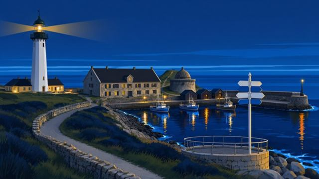
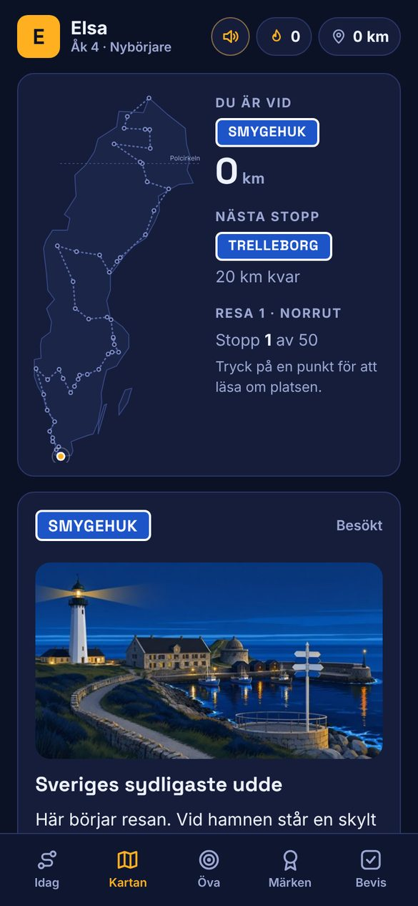
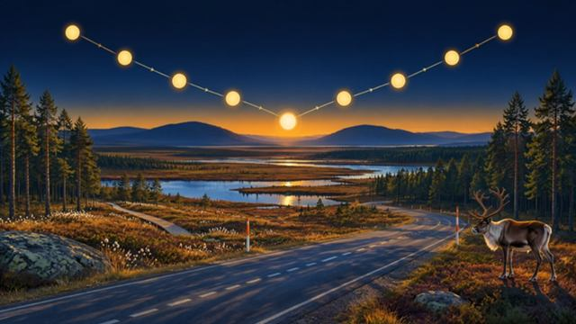
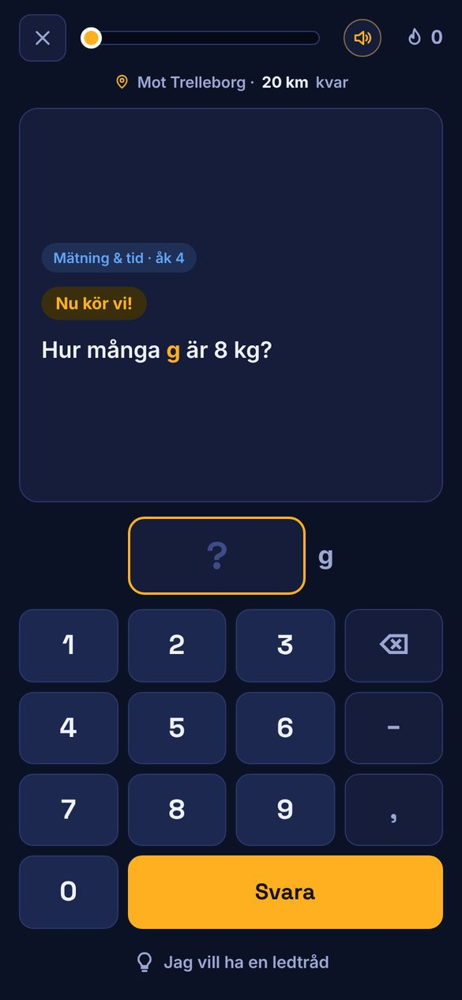
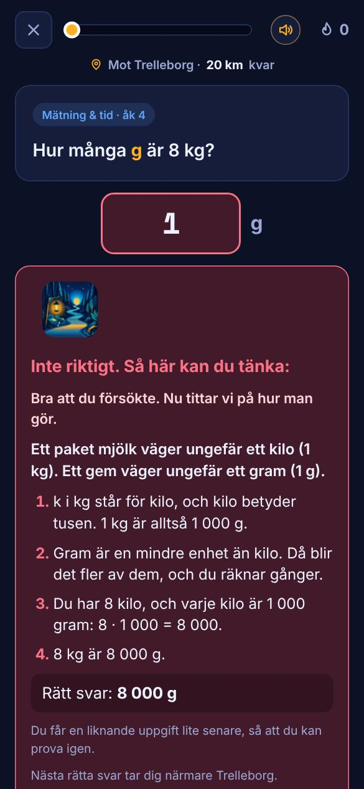
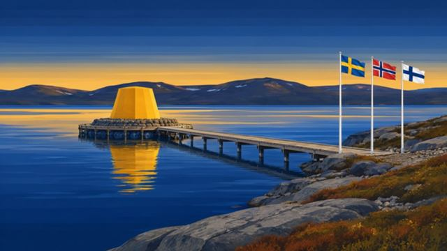
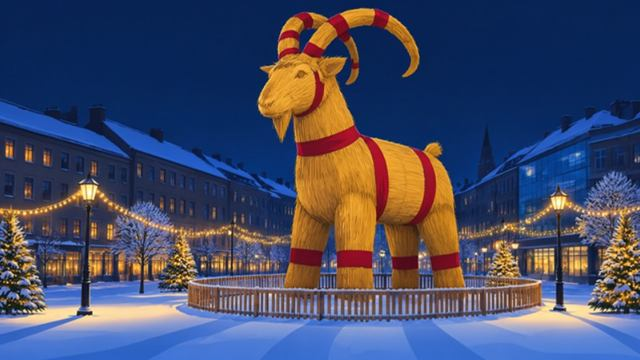
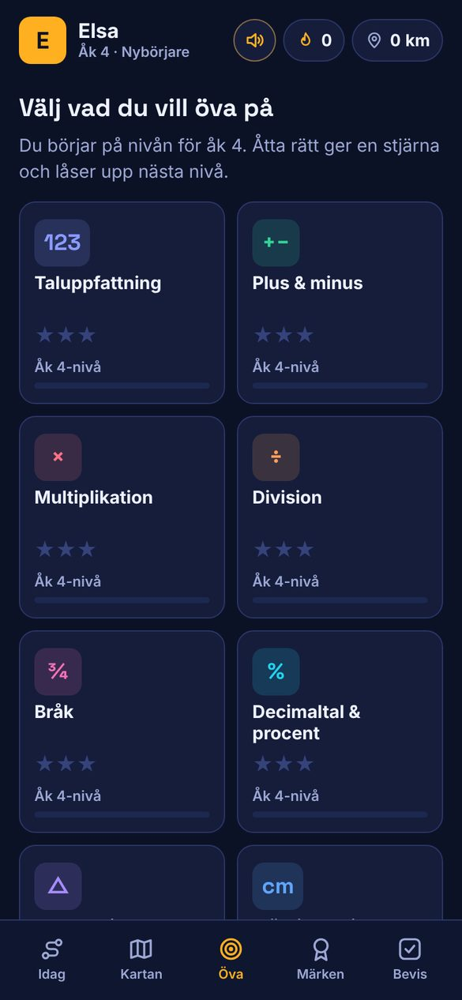
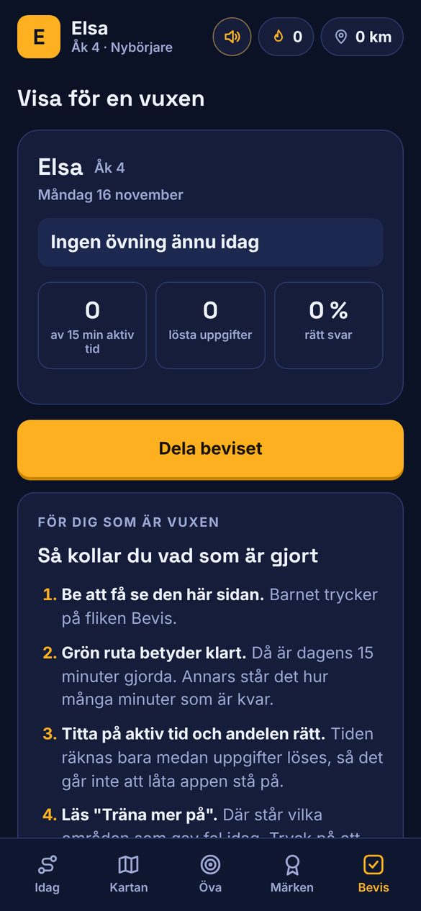

0 kmSmygehuk
Sveriges sydligaste udde. Här börjar resan. Vid hamnen står en skylt som pekar mot platser i hela världen.
Mattemilen är ett mattespel för årskurs 1–6 där barnet reser från Smygehuk till Treriksröset. Varje rätt svar tar barnet en kilometer närmare nästa stopp. Spelet är skapat i samarbete med lärare i matematik och har varken reklam eller prenumeration.
Tre etapper gratis. Hela resan för 29 kr, en gång.


Vi är en familj som reser mycket. På varje resa märkte vi samma sak: barnen ville helst sitta med skärmen i timmar, och tiden gick till spel som inte gav dem något tillbaka. Vi ville inte ta ifrån dem skärmen, men vi ville att en del av tiden skulle ge dem något.
Därför införde vi en enkel regel: varje timme delas i tre. 30 minuter fritt val, 15 minuter Mattemilen och 15 minuter helt utan skärm. Det fungerade bättre än vi hade trott. Resan kändes kortare, barnen fick tänka till och de lärde sig något på vägen.
Ur den regeln växte Mattemilen fram. Spelet är skapat i samarbete med lärare i matematik. Det följer läroplanen, är lätt att komma igång med och bygger på hur barn lär sig: små steg, bilder från vardagen och mycket uppmuntran.
Fredrik med familjAcademic Apps
Vi delar varje skärmtimme i tre. Barnen vet vad som gäller, det blir inga diskussioner, och halva timmen blir något annat än spel.
Funkar lika bra hemma efter mellanmålet som i bilen, på tåget eller på planet.
Barnet kör en etapp i taget och ser hela tiden hur långt det är kvar till nästa stopp. Det gör att barnet gärna räknar en uppgift till.
Uppgifterna utgår från det barnet arbetar med i skolan, från årskurs 1 till årskurs 6.
Några korta uppgifter i taget. Varje rätt svar flyttar barnet en kilometer på kartan.
50 stopp på 2 700 km. Vid varje stopp väntar en sevärdhet och en egen räknefråga om platsen.


När svaret blir fel visar spelet hur barnet kan tänka, steg för steg och med bilder från vardagen, som pengar, mjölkpaket och termometrar.
En stund senare kommer en liknande uppgift, så att barnet får chansen att lyckas. Behöver barnet hjälp på vägen finns en ledtråd, och alla uppgifter kan läsas upp på svenska.
Från Skåne till fjällen. Vid varje stopp väntar en sevärdhet att läsa om, så barnet lär sig om Sverige på köpet. Här är fem av dem.

Sveriges sydligaste udde. Här börjar resan. Vid hamnen står en skylt som pekar mot platser i hela världen.
Slottet vid Vänern. Ett vitt sagoslott med över 200 rum. Det ligger vid Vänern, som är Sveriges största sjö. Sjön är så stor att du inte ser land på andra sidan.
Uppsala domkyrka. Nordens högsta kyrka är 118,7 meter. Den är lika hög som den är lång.
Björkarnas stad. Efter en stor brand år 1888 planterades tusentals björkar längs gatorna. Träden skulle hindra eld från att sprida sig mellan husen.

Där tre länder möts. Sveriges nordligaste punkt. Vid ett gult röse i en sjö möts Sverige, Norge och Finland. Du kan gå runt tre länder på tio sekunder.
+45 stopp
Vikingastäder, slott, forsar, fjäll och norrsken. Resten upptäcker ni i appen, en kilometer i taget.
Frågorna handlar om platsen och anpassas efter barnets årskurs. Prova själv:
333 år

10 barn
3 kex
Mattemilen följer läroplanen i matematik och tränar tolv områden.


Välj ett dagligt mål. När målet är nått kan barnet visa dig Dagens bevis.
Bakom en förälderspärr ser du hela veckan: minuter per dag, andel rätt och vilka områden som behöver mer stöd. Dagens mål, dagar i rad, dagliga uppdrag och 16 märken att samla gör att barnet vill komma tillbaka.
Vi har byggt Mattemilen som vi vill att våra egna barns appar ska vara.
De tre första etapperna är gratis. Gillar ni appen låser ett engångsköp upp hela resan.
Barn i årskurs 1–6, ungefär 6–12 år. Du väljer årskurs när ni startar och kan ändra den i föräldradelen.
Ja. Spelet är skapat i samarbete med lärare i matematik och följer läroplanen i matematik för årskurs 1–6.
Nej. När appen är nedladdad fungerar den i bilen, på planet och i stugan.
Tre etapper är gratis. Sedan låser ett engångsköp på 29 kr upp hela resan. Ingen prenumeration.
I App Store gäller köpet hela familjen via Familjedelning, så syskon med egna iPhones eller iPads behöver inte köpa igen.
Nej. Det finns inget konto, och allt barnet gör sparas bara på enheten. Läs mer i vår integritetspolicy.
Då börjar en ny resa söderut, och uppgifterna fortsätter att växa med barnet.
Fler frågor? Titta på supportsidan eller mejla kontakt@academicapps.se.
Tre etapper är gratis. Se om ert barn vill köra en till.